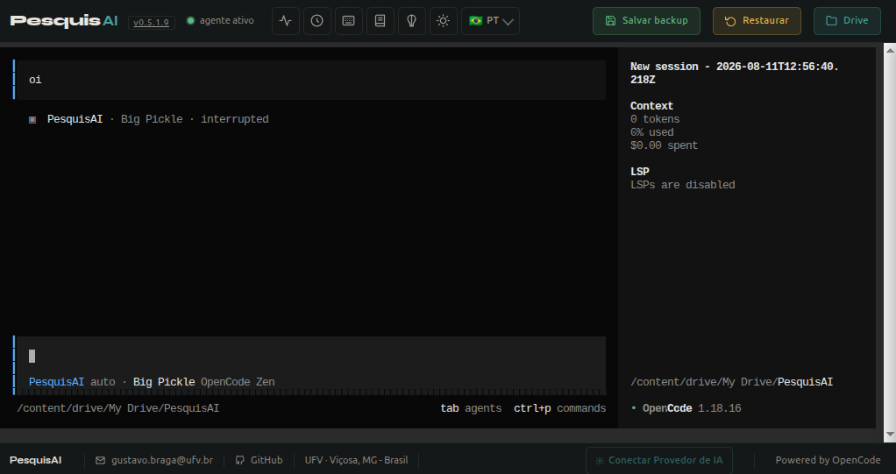

Pesquisa científica
com integridade.
Ecossistema de agentes de IA construído sobre a arquitetura OpenCode, projetado para pesquisadores brasileiros. Coleta dados reais de IBGE, DataSUS e agrobr, mantém memória persistente no Obsidian e produz conteúdo acadêmico conforme normas ABNT/UFV.

Seu primeiro passo no PesquisAI.
Três caminhos para entrar no ecossistema: o tutorial em vídeo para o primeiro uso, a apresentação interativa com a visão geral do projeto e o notebook no Colab para colocar a mão na massa.
Conheça o projeto em slides
O pitch completo do PesquisAI em uma apresentação navegável: o problema, os diferenciais, os módulos brasileiros e o roadmap do ecossistema.
Abrir apresentação Google ColabUse agora, sem instalar nada
Abra o notebook oficial, execute as células e converse com o agente em minutos — ambiente completo hospedado na nuvem do Google.
Abrir notebook DocumentaçãoManual completo
Guia detalhado de uso, instalação local e referência de comandos para quem quer ir além do primeiro contato.
Ler o manualVocê sempre sabe a origem do que recebe.
Cada resposta carrega um marcador explícito. Pesquisadores treinados a desconfiar de afirmações sem fonte encontram no PesquisAI um aliado, não mais um sistema opaco.
Extraído de fonte primária
O dado veio direto de uma skill habilitada — IBGE, DataSUS, PubMed, SciELO. Existe, foi consultado em tempo real, e tem referência rastreável até o documento original.
Inferência explicitada
Quando o dado exato não está disponível, o PesquisAI informa que se trata de uma estimativa e documenta a metodologia usada para chegar ao valor. Nada escondido.
Limite reconhecido
Se as fontes não retornam o que você precisa, o sistema declara explicitamente a ausência e recomenda onde buscar. Inventar seria mais fácil — e é proibido.
Veja o que uma resposta entrega.
À direita, um exemplo real de como o PesquisAI responde a uma pergunta sobre dados demográficos. O marcador de evidência está visível, a fonte está documentada, os dados têm referência rastreável.
- Marcador de evidência explícito em cada resposta
- Dados tabulares formatados, não colados em prosa
- Fonte primária linkada com DOI ou URL oficial
- Nenhuma inferência sem metodologia declarada
- Arquivo resultante salvo no Google Drive
Segundo o Censo Demográfico 2022 do IBGE, o município de Viçosa (MG) apresenta os seguintes indicadores:
- População
- 76.381 habitantes
- Densidade
- 296,1 hab/km²
- IDH-M (2010)
- 0,775
- Faixa IDH
- Alto — PNUD/Atlas BR
A queda populacional observada entre 2010 e 2022 reflete o envelhecimento da população universitária e o êxodo de famílias jovens para municípios vizinhos com maior oferta habitacional.
Seis etapas, executadas a cada consulta.
Sem atalhos, sem silêncios. Você acompanha cada movimento do agente.
Compreensão
O agente analisa o tema, identifica que tipo de dado é necessário e quais fontes devem ser consultadas antes de iniciar a coleta.
Coleta
Skills especializadas consultam IBGE, DataSUS, agrobr, PubMed, SciELO, Lilacs e outras bases oficiais em tempo real, sem cache desatualizado.
Validação
Dados nacionais são cruzados com literatura internacional. Divergências entre fontes são sinalizadas, nunca ocultadas — quem decide é o pesquisador.
Síntese
Informações de múltiplas fontes são integradas em uma narrativa coesa, com referências rastreáveis e cadeia causal entre os achados.
Redação
O conteúdo é redigido em linguagem científica precisa, com citações no formato ABNT, APA ou Vancouver — conforme a escolha do pesquisador.
Entrega
O resultado inclui os arquivos gerados e a lista completa de fontes consultadas, com link direto para o Google Drive e nota de auditoria no vault.
Nove módulos brasileiros, 161 scientific skills.
Sobre a biblioteca Scientific Agent Skills (161 skills científicos e 100+ bases de dados indexadas do repositório K-Dense-AI), o PesquisAI adiciona nove módulos próprios voltados ao contexto brasileiro — cada um conecta o agente a uma fonte ou capacidade específica, sempre sob a mesma política de transparência.
Dados IBGE
Consulta automatizada à API do IBGE — Censo Demográfico, PNAD Contínua, PIB municipal, SIDRA, malhas geográficas, CNAE, nomes e calendário de pesquisas.
DataSUS / OpenDataSUS
Integração com 101 datasets do Ministério da Saúde — mortalidade, internações, vacinação, COVID-19, dengue, SINAN, SIH, SRAG, nascimentos e indicadores.
Agro & Ambiente
38+ fontes do agronegócio — CONAB, IBGE PAM/LSPA, ComexStat, CEPEA, MapBiomas, PRODES/DETER, SICAR/CAR, créditos rurais (SICOR), clima (NASA POWER, INMET).
Dados Brasil
Indicadores oficiais complementares — Banco Central (SELIC, IPCA, câmbio), Câmara, Senado, Portal da Transparência, TCU, TSE, ANP, ANTT, Anvisa, INEP, Atlas da Violência.
Formatação ABNT/UFV
Normalização completa conforme NBR 14724/2024, NBR 6023/2018 e NBR 10520/2023 — TCCs, monografias, dissertações, teses, citações, referências, sumário e paginação.
Análise Qualitativa
Métodos clássicos e avançados — frequência de palavras, CHD (Reinert), análise de similitude, codificação temática, LDA, KWIC, sentimentos. Substitui NVivo e Iramuteq.
Skills científicas (K-Dense)
Mineração de textos, revisão bibliográfica sistemática, suporte metodológico IMRAD, busca em PubMed, SciELO, Lilacs, Cochrane, arXiv, Semantic Scholar.
Memória Persistente
Vault Obsidian no Google Drive — notas, dados e decisões persistem entre sessões. 10 templates, busca BM25 + semântica (RAG), taxonomia de tags, auditoria automática.
Memorial RSC-PCCTAE
Geração automática do Memorial RSC-PCCTAE a partir do Relatório Detalhado emitido pelo sistema oficial da UFV. Lê o PDF, extrai dados e formata narrativa acadêmica UFV/ABNT.
Seis frentes, uma única metodologia.
O PesquisAI reúne num só ambiente as ferramentas essenciais para a pesquisa acadêmica brasileira — todas com a mesma política de transparência e integridade.
Dados oficiais do Brasil
38+ fontes públicas consultadas em tempo real: IBGE (Censo, PNAD, PIB), DataSUS (epidemiologia, mortalidade, vacinação), agrobr (preços, safra, desmatamento), Portal da Transparência.
Revisão sistemática
Busca em PubMed, SciELO, Lilacs, Cochrane, arXiv e Semantic Scholar com critérios de inclusão/exclusão explícitos. Extração estruturada de métodos, amostras e resultados.
Formatação ABNT/UFV
Normalização completa de TCCs, monografias, dissertações e teses conforme NBR 14724/2024, NBR 6023/2018 e NBR 10520/2023. Citações, referências, sumário e paginação.
Análise qualitativa
Frequência de palavras, CHD (método Reinert), análise de similitude, codificação temática, modelagem de tópicos (LDA). Substitui NVivo e Iramuteq com integração Python.
Memória persistente
Notas, dados e decisões metodológicas salvos em vault Obsidian no Google Drive. Busca semântica (RAG), continuidade entre sessões — o agente retoma o projeto de onde parou.
Código aberto
Disponível no GitHub sob licença MIT. Auditável linha a linha, extensível, gratuito. Pesquisadores podem revisar a metodologia, sugerir mudanças e adaptar para suas áreas.
Nove formatos de saída acadêmica.
Do artigo original à defesa de memorial — cada entrega segue normas ABNT/UFV e carrega marcadores de evidência rastreáveis em todo o texto.
Artigo Científico
IMRaD completo (Introdução, Métodos, Resultados, Discussão) com citações formatadas em ABNT e referências validadas.
Revisão Sistemática
Protocolo PRISMA, string de busca, triagem por critérios de inclusão/exclusão e síntese por eixos temáticos.
Meta-Análise
Síntese quantitativa de efeitos com forest plots e heterogeneidade — sobre evidências de múltiplos estudos.
Dissertação / Tese
Estrutura ABNT/UFV, capítulos, resumo e defesa — normalização completa do trabalho acadêmico.
Proposta de Projeto
Edital, orçamento e cronograma para submissão a agências (CNPq, CAPES, FAPs) sob normas de chamada.
Relatório de Dados
Tabelas, séries temporais e gráficos gerados a partir de IBGE, DataSUS e demais fontes brasileiras.
Análise Qualitativa
Método Reinert, similitude e codificação — substitui NVivo e Iramuteq em análises de conteúdo.
Hipóteses Testáveis
Formulação de H₀/H₁, variáveis e plano de teste estatístico a partir de observações e literatura.
Declaração de IA
Transparência de uso de LLM conforme normas de periódicos e integridade científica (CNPq/CAPES).
Prompts de exemplo e respostas ilustrativas.
Nota: os trechos abaixo reproduzem exemplos de demonstração do pitch do projeto. Não correspondem a consultas executadas ao vivo — servem para ilustrar o padrão de resposta do agente (fonte, marcador de evidência e link).
Gini por UF (2010–2022)
"Gini por UF 2010 a 2022"
O Índice de Gini do Distrito Federal recuou de 0,563 para 0,514; o do Piauí, de 0,616 para 0,581 — convergência regional lenta. [exemplo ilustrativo]
Agrotóxicos por estado
"Agrotóxicos por estado"
Mato Grosso lidera em volume comercializado; São Paulo, em variedade de princípios ativos registrados. [exemplo ilustrativo]
EGFR em câncer
"EGFR em câncer"
A mutação KRAS G12C dirige a aprovação de inibidores; evidência do trial CodeBreaK 100. [exemplo ilustrativo]
Como tudo se conecta.
O PesquisAI roda sobre ttyd (terminal web) + OpenCode (runtime do agente, v1.17.18), com dependências gerenciadas pelo uv (Astral). Os nove módulos brasileiros operam sobre a biblioteca Scientific Agent Skills — 161 skills científicos e 100+ bases de dados indexadas —, todas plugáveis.
Google Colab └── ttyd (terminal web na porta 8000) └── opencode (runtime do agente) ├── skill-ibge # Consulta à API do IBGE ├── skill-datasus # OpenDataSUS — 101 datasets ├── skill-dados-brasil # BCB, Câmara, Senado, TCU… ├── skill-agrobr # CONAB, MapBiomas, SICOR… ├── skill-UFV-ABNT # NBR 14724 / 6023 / 10520 ├── skill-analise-qualitativa # CHD, Reinert, LDA, similitude ├── scientific-skills # K-Dense — PubMed, SciELO, arXiv ├── skill-obsidian-memory # ← memória persistente (v0.5.0+) ├── skill-memorial-ufv # ← Memorial RSC-PCCTAE UFV/ABNT (v0.5.1.9+) └── pesquisai # instruções do agente + AGENTS.md Dependências: uv (Astral) · Python 3.10+ · 4 idiomas (pt_BR, en_US, es_ES, fr_FR)
Por que a integridade importa.
Vozes representativas de personas que usam ferramentas de pesquisa assistida por IA em seu trabalho.
O PesquisAI entregou geoprocessamento de alto nível e em velocidade surpreendente. Em duas semanas, consegui processar dados suficientes para toda minha dissertação.
A utilização da inteligência artificial PesquisAI, desenvolvida pelo Professor Gustavo, muda seu modo de pensar e desenvolver pesquisa. Fiz análises utilizando dados Geoespaciais, assim como análises em softwares GIS e em alguns minutos os dados foram revisados e aprimorados com produção de tabelas, mapas e texto coeso e com muita confiabilidade nas referências bibliográficas. O trabalho do pesquisador passa a ser identificar os dados da análise e quais as bases que devem ser analisadas. Nunca deixaremos de pensar e avaliar os dados, mas o mecânico da extração já podem ser feitas com essa IA gratuita e de excelência.
O programa é ótimo para busca e estruturação de artigos, dissertações e teses. A IA realiza as buscas sem alucinações e mostra as fontes consultadas.
Nota editorial: Os depoimentos acima são representativos de personas típicas de usuários, elaborados a partir de padrões de uso observados durante desenvolvimento. Não correspondem a falas atribuíveis a pessoas específicas.
O que mudou recentemente.
Últimas cinco releases do PesquisAI. Histórico completo disponível no CHANGELOG.md no GitHub.
3 Versão Offline para Linux e atualização do AGENTS.md
- Bugfix: Instalador offline para Linux
- Bugfix: Reescrita completa do AGENTS.md
- Feature: Nova arquitetura de diretórios
- Fortalecimento de Integridade e Segurança
3 bugfixes + nova skill Memorial UFV
- Bugfix: Botões de provedor (edit/delete) quebrados por SyntaxError em string Python
- Bugfix: Restauração de sessão agora reflete no terminal ttyd
- Feature: Confirmação antes de restaurar backup
- Nova skill:
skill-memorial-ufv— Memorial RSC-PCCTAE UFV/ABNT
Editor de Memória Obsidian no botão 🧠
- Modal split view: lista de notas + editor markdown (Edit / Preview / Split)
- 4 endpoints REST novos para ler/criar/buscar/deletar notas
- Preview markdown via
marked.jscom destaque de[[wikilinks]]e#tags - 20 novas chaves i18n (
memory.editor.*) em 4 idiomas
Obsidian Autopilot — o agente agora SALVA SOZINHO
pesquisai/obsidian/autopilot.py— API de alto nível: recall, save, save_finding, start/end_session- Prompt do agente injeta instruções de autopilot
- Daily note e MOC raiz criados automaticamente no vault
- Tudo é no-op se o vault não estiver disponível
Obsidian Second Brain — memória de longo prazo
- Módulo
pesquisai.obsidian(8 arquivos, ~1.500 linhas) - 10 templates Obsidian (daily, research, literature, session, methodology, datasource, hypothesis, reference, moc, inbox)
- Busca BM25 offline + backlinks + wikilinks + tags
- Taxonomia de tags
pesquisai/*(19 tags oficiais) - 71 testes pytest (100% passing) + teste e2e validado
Release inicial do PesquisAI
- Agente de pesquisa científica via OpenCode
- Integração IBGE, DataSUS, dados-brasil, agrobr
- Wrapper HTML com ttyd + tema escuro "pesquisai"
- Backup/restore de sessões · gerenciamento de provedores de IA · 4 idiomas
Use o PesquisAI com crédito.
O uso do PesquisAI em trabalhos acadêmicos deve ser declarado conforme diretrizes do COPE, CAPES e principais periódicos. Escolha o formato abaixo.
BRAGA, Gustavo Bastos. PesquisAI: agente de inteligência artificial para pesquisa científica. Versão 0.5.1.9. Viçosa: Universidade Federal de Viçosa, 2026. Disponível em: https://colab.research.google.com/github/gustavobraga-byte/PesquisAI/. Acesso em: DD mês. AAAA. Projeto registrado no SisPPG/UFV sob nº 10356285004. Verificar autenticidade em: http://sisppg.ufv.br
@software{braga2026pesquisai, author = {Gustavo Bastos Braga}, title = {{PesquisAI}: Agente de Intelig{\^e}ncia Artificial para Pesquisa Cient{\'\i}fica}, year = {2026}, version = {0.5.1.9}, institution = {Universidade Federal de Vi{\c{c}}osa (UFV)}, url = {https://colab.research.google.com/github/gustavobraga-byte/PesquisAI/} }
Para modelos prontos de declaração de uso de IA (ABNT, ICMJE, Nature, Science, Elsevier, Springer), consulte o arquivo declaracao_uso_ia.md no repositório.
Compromisso com a integridade científica.
O PesquisAI opera sob uma política inegociável: nunca inventar dados, sempre declarar a fonte, sempre sinalizar a incerteza. Cada resposta é rastreável até sua origem.